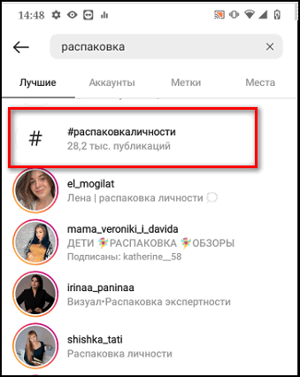
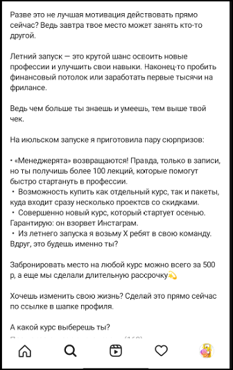

Что такое распаковка личности в Инстаграме и как ее сделать

Сделать распаковку личности в Инстаграме* смогут обладатели блогов, ведущие страниц интернет-магазинов и экспертных аккаунтов. Это тип контента, который используют в профиле, чтобы поближе познакомиться с аудиторией, сформировать обратную связь и вызвать доверие.
Новый тренд в Инстаграме*
Распаковка личности и позиционирование в Инстаграме* начинается с публикации знакомства. Но в отличие от такого типа контента, автору нужно использовать несколько постов и разделить информацию.
- познакомить аудиторию с экспертом для повышения лояльности;
- показать, что автор «такой же простой человек»;
- привлечь историями новых клиентов, подписчиков;
- выстроить личный бренд;
- повысить лояльность аудитории.
- Позиционирование в социальной сети: выделить нишу.
- Провести анализ среди конкурентов: какие темы они поднимают;
- Составить контент-план.
- Выпустить первый пост-знакомства.
- Добавить постоянную рубрику в Сторис.
Раскрытие индивидуальности можно провести самостоятельно или обратиться к профессионалам. SMM-специалист поможет с тем, как определить сильные стороны блога, какие темы выбирать и какие идеи внедрить, чтобы познакомиться с аудиторией ближе.
Провести распаковку личности в Инстаграме*
Такая услуга похожа на «позиционирование», но глубже и связана с бренд-менеджементом. Если нужна распаковка личности без привлечения экспертов, автор профиля должен ответить на такие вопросы в течение семи дней:
- цель блога. Что полезного принесет блог для его подписчиков;
- какие публикации пригодятся новым и старым фанатам. Контент для этих категорий разный, поэтому нужно скорректировать план, чтобы обе группы остались заинтересованными;
- раскрывает ли блок «Актуального» черты и характер ведущего;
- каким себя хочет показать владелец страницы.
В отличие от позиционирования, распаковка похожа на создание персонажа. То есть, блогер должен составить историю своей жизни, описать свой характер и предпочтения. Далее, разделить этот контент на несколько публикаций и сопоставить с идеей блога.
Например: Девушка-пекарь, изготавливает торты на заказ, возраст 26 лет, образование: высшее юридическое, есть ребенок трех лет, замужем.
Распаковка личности:
- первое знакомство. Основная информация о блогере;
- почему решила заняться выпеканием тортов и не трудоустроилась по профессии;
- как она проводит день, что может посоветовать другим: тайм-менеджмент, духовные практики, секреты по уходу за собой;
- как успевает справиться с домашними делами и реализоваться, как пекарь;
- какие ситуации происходят с клиентами (можно придумать положительный и отрицательный опыт);
- правда или ложь. Игра с подписчиками, которые давно знают блогера и его привычки;
- еще один пост-знакомство с изменениями для новых подписчиков.

Отдельный план составляют для Историй, где автор делится либо рабочими моментами, либо напротив – посвящает только родным и семье.Обратиться к профессионалу
Владельцам среднем бизнеса, которые ранее не вели профили в Инстаграме*, стоит обратиться за распаковкой к профессионалу. Это не только сэкономит время, но поможет подробно проработать план блога. Как найти эксперта:
- Зайти в Инстаграм* – Поиск.
- Ввести хештег «распаковка личности» - найти блогера с подписчиками от 100 тыс.
- Посмотреть, нет ли прайса на оказание услуг.
Так как услуга пока новая и не все специалисты по продвижению с ней знакомы, можно заказать стандартное «позиционирование». Отличие в том, что распаковка направлена на искренность и общение с аудиторией, как «с лучшим другом».
Составить контент-план в Инстаграме*
Контент-план составляют, чтобы заранее распланировать размещение публикаций. То есть, автор подбирает идеи, которые можно было бы использовать в своем профиле. Далее, выбрать даты размещения и постепенно добавлять посты. Так автор сможет отслеживать активность на определенных тематиках и в дальнейшем развивать темы. Для распаковки личности контент-план составляют с учетом давности создания блога и текущий объем аудитории.
- рассказать о себе. Короткая история, которая включает место проживания, возраст и социальный статус. Также, отсылка к деятельности и идеи блога;
- рассказать об идеи блога подробнее;
- поделиться своими планами на год. Рассказать о том, какие успехи уже есть.
- история создания. Год, какая идея лежит в основе;
- проблемы на старте бизнеса. Какие препятствия были на пути у владельца;
- расширение продукции и продвижение;
- контактная информация;
- какие материалы применяются и почему.
Позиционирование
Вопросы для распаковки личности в Инстаграме* отличаются от тех, которые используют при позиционировании: они касаются индивидуальности. Как позиционировать свой продукт или услуги:
- воспользоваться персональной историей, как мотивацией для подписчиков;
- поделиться рассказом о том, как создавался;
- указать, какие преимущества есть в сравнение с конкурентами;
- рассказать о способах применениях;
- поделиться разными форматами услуги: PRO, базовый или универсальный.
Основное требование к блогеру или эксперту при продвижении – знать свои преимущества и уметь их использовать в продвижении.
Разные формы оказания услуги привлечет разные группы потребителей. Недорогие помогут собрать первую клиентскую базу. Услуги, с повышенной ценой, рассчитаны на клиентов, которые уже ознакомились с профилем и готовы заплатить за полный комплекс. При этом, все услуги или продукцию нужно позиционировать не с точки зрения: «дешевле значит хуже», а «отсутствие дополнительных возможностей». Например, блогеры-эксперты нередко предлагают курсы с направленностью: дороже – постоянная поддержка учеников, возможность задать вопрос в любое время. Для пакет дешевле – только проверка домашних заданий и небольшая консультация.
Экспертность в блоге
Распаковка личности не должна мешать экспертности. Ведь задача блога – предоставить интересную информацию и показать, что блогеру есть чем поделиться. Позиционирование включает создание образа эксперта, который может в полной мере решить вопросы потребителя. Как доказать свою экспертность и стать конкурентоспособным в Инстаграме*:
- Выбрать тему, в которой автор блога разбирается.
- Посмотреть конкурентов и их последние темы.
- Определить свою целевую аудиторию и её возможные проблемы.
- Предложить потенциальным клиентам решение.

К примеру: помощь по выбору компьютерной техники. К началу осени многие родители выбирают среднего сегмента, но прочную технику для школьников и студентов. Это должен быть ноутбук, планшет и электронные браслеты, которые помогут в обучении и в связи с близкими. Задача автора: рассказать о своем предыдущем опыте, воспользоваться сторителлингом и предложить несколько публикаций с подборками.Сторителлинг – это форма преподнесения рекламных текстов, которая построена на личной истории (выдуманной, приукрашенной). Рассказывать историю можно в разных стилях: сказки от третьего лица до коротких личных рассказов.
Получить отклик от подписчиков
Чтобы аудитория откликнулась на истории, нужно проводить небольшие опросы. Популярные темы в Инстаграме*:
- 10 фактов обо мне и 3 из них ложь. Угадайте, какие именно;
- как давно вы подписаны на мой блог;
- чем привлекла моя страница и что полезного вы узнали;
- давайте устроим перекличку по городам;
- у меня произошла вот такая ситуация и я хочу рассмотреть эту проблему шире. Хотели бы вы прочесть?;
- какое имя мне бы подошло?;
- помог ли вам мой блог и как именно.
И другие подобные, под которым можно собрать комментарии, получить отклик от аудитории. На основе правильных ответов можно определить, какой объем подписчиков постоянные и активные.
Причем, не все подписчики, взаимодействующие с контентом, потенциальные покупатели. Но здесь работают алгоритмы Инстаграма*, которые рекомендуют друзьям и подписчикам этих пользователей, страницу в Ленте. Поэтому, активная аудитория влияет на дальнейшее продвижение, даже если не осуществляет покупки.